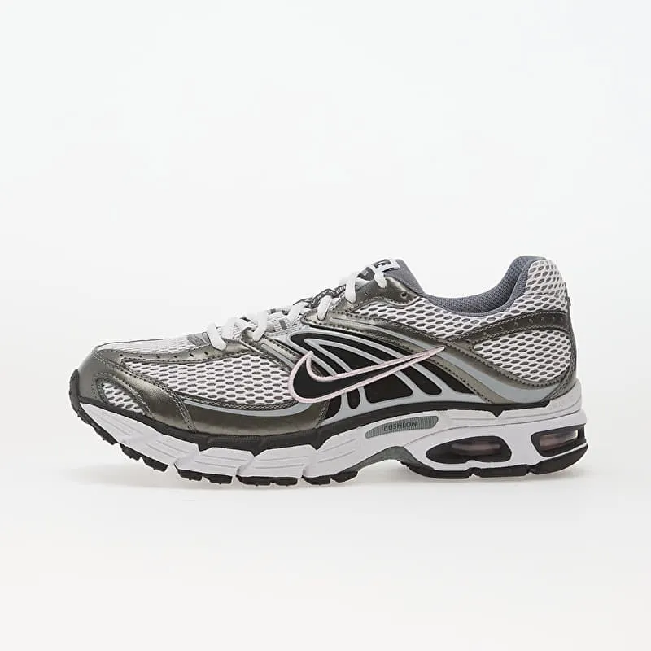

Precio original: 76,99€ |¡Oferta final!: 59,99€
Inspiradas en las zapatillas de running retro, las Air Max Moto 2K son tan cómodas como llamativas. Hay amortiguación por todas partes: desde la espuma en la planta del pie hasta la unidad Air en el talón, pasando por el acolchado en la lengüeta y alrededor de los tobillos. Si quieres lucir un elegante estilo retro, las Moto 2K son la mejor opción.